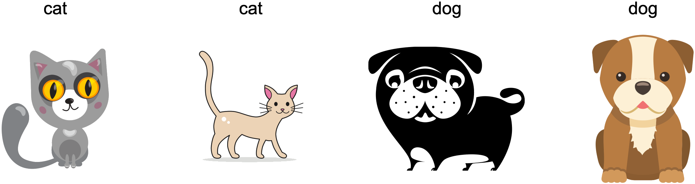
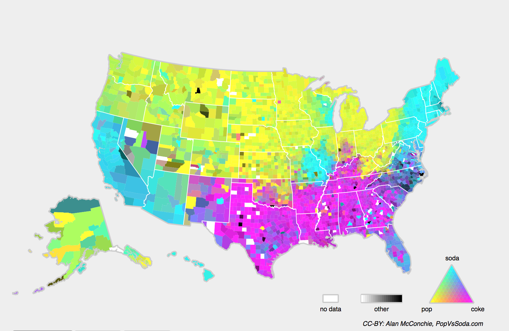

Environnement et décalage de distribution
:label:sec_environment-and-distribution-shift
Dans les sections précédentes, nous avons travaillé sur un certain nombre d’applications pratiques du machine learning, en ajustant des modèles à divers ensembles de données. Pourtant, nous ne nous sommes jamais arrêtés pour contempler ni d’où provenaient les données en premier lieu ni ce que nous prévoyons finalement de faire avec les sorties de nos modèles. Trop souvent, les développeurs de machine learning en possession de données se précipitent pour développer des modèles sans prendre le temps de considérer ces questions fondamentales.
De nombreux déploiements de machine learning ayant échoué peuvent être attribués à ce manquement. Parfois, les modèles semblent fonctionner merveilleusement bien selon la précision de l’ensemble de test, mais échouent de manière catastrophique lors du déploiement lorsque la distribution des données se décale soudainement. Plus insidieusement, c’est parfois le déploiement même d’un modèle qui peut être le catalyseur perturbant la distribution des données. Supposons, par exemple, que nous ayons entraîné un modèle pour prédire qui remboursera un prêt plutôt que de faire défaut, en découvrant que le choix des chaussures d’un demandeur était associé au risque de défaut (les Richelieu indiquent un remboursement, les baskets indiquent un défaut). Nous pourrions être enclins par la suite à accorder un prêt à tout demandeur portant des Richelieu et à le refuser à tous les demandeurs portant des baskets.
Dans ce cas, notre saut mal réfléchi de la reconnaissance de formes à la prise de décision et notre incapacité à examiner de manière critique l’environnement pourraient avoir des conséquences désastreuses. Pour commencer, dès que nous commencerions à prendre des décisions basées sur les chaussures, les clients s’en rendraient compte et changeraient leur comportement. Peu de temps après, tous les demandeurs porteraient des Richelieu, sans aucune amélioration concomitante de leur solvabilité. Prenez une minute pour digérer cela, car des problèmes similaires abondent dans de nombreuses applications du machine learning : en introduisant nos décisions basées sur des modèles dans l’environnement, nous pourrions casser le modèle.
Bien que nous ne puissions pas traiter ces sujets de manière exhaustive en une seule section, notre objectif ici est d’exposer certaines préoccupations courantes, et de stimuler la pensée critique nécessaire pour détecter de telles situations tôt, atténuer les dommages et utiliser le machine learning de manière responsable. Certaines solutions sont simples (demander les “bonnes” données), certaines sont techniquement difficiles (implémenter un système d’apprentissage par renforcement), et d’autres exigent que nous sortions du domaine de la prédiction statistique pour nous attaquer à des questions philosophiques difficiles concernant l’application éthique des algorithmes.
Types de décalage de distribution
Pour commencer, nous restons dans le cadre de la prédiction passive en considérant les différentes manières dont les distributions de données pourraient se décaler et ce qui pourrait être fait pour sauver les performances du modèle. Dans une configuration classique, nous supposons que nos données d’entraînement ont été échantillonnées à partir d’une certaine distribution \(p_S(\mathbf{x},y)\) mais que nos données de test consisteront en des exemples non étiquetés tirés de certaines distributions différentes \(p_T(\mathbf{x},y)\). Déjà, nous devons faire face à une réalité déconcertante. En l’absence de toute hypothèse sur la façon dont \(p_S\) et \(p_T\) sont liés l’un à l’autre, apprendre un classifieur robuste est impossible.
Considérons un problème de classification binaire, où nous souhaitons distinguer les chiens des chats. Si la distribution peut se décaler de manière arbitraire, alors notre configuration permet le cas pathologique dans lequel la distribution sur les entrées reste constante : \(p_S(\mathbf{x}) = p_T(\mathbf{x})\), mais les étiquettes sont toutes inversées : \(p_S(y \mid \mathbf{x}) = 1 - p_T(y \mid \mathbf{x})\). En d’autres termes, si Dieu peut soudainement décider qu’à l’avenir tous les “chats” sont désormais des chiens et que ce que nous appelions auparavant “chiens” sont désormais des chats — sans aucun changement dans la distribution des entrées \(p(\mathbf{x})\), alors nous ne pouvons pas distinguer cette configuration d’une autre où la distribution n’a pas changé du tout.
Heureusement, sous certaines hypothèses restreintes sur la façon dont nos données pourraient changer à l’avenir, des algorithmes fondés peuvent détecter le décalage et parfois même s’adapter à la volée, améliorant la précision du classifieur original.
Décalage de covariables
Parmi les catégories de décalage de distribution, le décalage de covariables (covariate shift) est peut-être le plus largement étudié. Ici, nous supposons que si la distribution des entrées peut changer au fil du temps, la fonction d’étiquetage, c’est-à-dire la distribution conditionnelle \(P(y \mid \mathbf{x})\), ne change pas. Les statisticiens appellent cela décalage de covariables car le problème provient d’un décalage dans la distribution des covariables (caractéristiques). Bien que nous puissions parfois raisonner sur le décalage de distribution sans invoquer la causalité, nous notons que le décalage de covariables est l’hypothèse naturelle à invoquer dans les contextes où nous pensons que \(\mathbf{x}\) cause \(y\).
Considérons le défi de distinguer les chats et les chiens. Nos
données d’entraînement pourraient consister en des images du type de
celles de la :numref:fig_cat-dog-train.
 :label:
:label:fig_cat-dog-train
Au moment du test, on nous demande de classifier les images de la
:numref:fig_cat-dog-test.

:label:fig_cat-dog-test
L’ensemble d’entraînement se compose de photos, tandis que l’ensemble de test ne contient que des dessins animés. S’entraîner sur un ensemble de données avec des caractéristiques sensiblement différentes de l’ensemble de test peut être source de problèmes en l’absence d’un plan cohérent sur la façon de s’adapter au nouveau domaine.
Décalage d’étiquettes
Le décalage d’étiquettes (label shift) décrit le problème inverse. Ici, nous supposons que la marginale de l’étiquette \(P(y)\) peut changer mais que la distribution conditionnelle de classe \(P(\mathbf{x} \mid y)\) reste fixe à travers les domaines. Le décalage d’étiquettes est une hypothèse raisonnable à faire lorsque nous pensons que \(y\) cause \(\mathbf{x}\). Par exemple, nous pouvons vouloir prédire des diagnostics à partir de leurs symptômes (ou d’autres manifestations), même si la prévalence relative des diagnostics évolue au fil du temps. Le décalage d’étiquettes est l’hypothèse appropriée ici car les maladies causent les symptômes. Dans certains cas dégénérés, les hypothèses de décalage d’étiquettes et de décalage de covariables peuvent être valides simultanément. Par exemple, lorsque l’étiquette est déterministe, l’hypothèse de décalage de covariables sera satisfaite, même lorsque \(y\) cause \(\mathbf{x}\). Il est intéressant de noter que dans ces cas, il est souvent avantageux de travailler avec des méthodes qui découlent de l’hypothèse de décalage d’étiquettes. C’est parce que ces méthodes ont tendance à impliquer la manipulation d’objets qui ressemblent à des étiquettes (souvent de faible dimension), par opposition à des objets qui ressemblent à des entrées, qui ont tendance à être de grande dimension en deep learning.
Décalage de concept
Nous pouvons également rencontrer le problème connexe du décalage
de concept (concept shift), qui survient lorsque les
définitions mêmes des étiquettes peuvent changer. Cela semble bizarre —
un chat est un chat, non ? Cependant, d’autres
catégories sont sujettes à des changements d’usage au fil du temps. Les
critères de diagnostic des maladies mentales, ce qui est considéré comme
à la mode, et les intitulés de poste, sont tous sujets à des quantités
considérables de décalage de concept. Il s’avère que si nous nous
déplaçons à travers les États-Unis, en changeant la source de nos
données selon la géographie, nous trouverons un décalage de concept
considérable concernant la distribution des noms pour les boissons
gazeuses comme le montre la :numref:fig_popvssoda.

:width:400px :label:fig_popvssoda
Si nous devions construire un système de traduction automatique, la distribution \(P(y \mid \mathbf{x})\) pourrait être différente selon notre emplacement. Ce problème peut être difficile à repérer. Nous pourrions espérer exploiter le fait que le décalage ne se produit que progressivement, soit dans un sens temporel, soit dans un sens géographique.
Exemples de décalage de distribution
Avant d’approfondir le formalisme et les algorithmes, nous pouvons discuter de certaines situations concrètes où le décalage de covariables ou de concept pourrait ne pas être évident.
Diagnostics médicaux
Imaginez que vous vouliez concevoir un algorithme pour détecter le cancer. Vous collectez des données auprès de personnes saines et malades et vous entraînez votre algorithme. Il fonctionne bien, vous donne une grande précision et vous en concluez que vous êtes prêt pour une carrière réussie dans le diagnostic médical. Pas si vite.
Les distributions qui ont donné naissance aux données d’entraînement et celles que vous rencontrerez dans la nature pourraient différer considérablement. C’est ce qui est arrivé à une malheureuse start-up avec laquelle certains d’entre nous, auteurs, ont travaillé il y a des années. Ils développaient un test sanguin pour une maladie qui affecte principalement les hommes âgés et espéraient l’étudier en utilisant des échantillons de sang qu’ils avaient collectés auprès de patients. Cependant, il est considérablement plus difficile d’obtenir des échantillons de sang d’hommes sains que de patients malades déjà dans le système. Pour compenser, la start-up a sollicité des dons de sang auprès d’étudiants sur un campus universitaire pour servir de témoins sains dans l’élaboration de leur test. Ensuite, ils nous ont demandé si nous pouvions les aider à construire un classifieur pour détecter la maladie.
Comme nous leur avons expliqué, il serait en effet facile de distinguer les cohortes saines et malades avec une précision quasi parfaite. Cependant, c’est parce que les sujets testés différaient par l’âge, les niveaux d’hormones, l’activité physique, le régime alimentaire, la consommation d’alcool, et bien d’autres facteurs sans rapport avec la maladie. Il était peu probable que ce soit le cas avec de vrais patients. En raison de leur procédure d’échantillonnage, nous pouvions nous attendre à rencontrer un décalage de covariables extrême. De plus, ce cas était peu susceptible d’être corrigible via des méthodes conventionnelles. En bref, ils ont gaspillé une somme d’argent importante.
Voitures autonomes
Supposons qu’une entreprise veuille exploiter le machine learning pour développer des voitures autonomes. Un composant clé ici est un détecteur de bord de route. Comme les données annotées réelles coûtent cher à obtenir, ils ont eu l’idée (intelligente et discutable) d’utiliser des données synthétiques provenant d’un moteur de rendu de jeu comme données d’entraînement supplémentaires. Cela a très bien fonctionné sur des “données de test” tirées du moteur de rendu. Hélas, à l’intérieur d’une vraie voiture, ce fut un désastre. Il s’est avéré que le bord de la route avait été rendu avec une texture très simpliste. Plus important encore, tout le bord de la route avait été rendu avec la même texture et le détecteur de bord de route a appris cette “caractéristique” très rapidement.
Une chose similaire est arrivée à l’armée américaine lorsqu’elle a essayé pour la première fois de détecter des chars dans la forêt. Ils ont pris des photographies aériennes de la forêt sans chars, puis ont conduit les chars dans la forêt et ont pris une autre série de photos. Le classifieur semblait fonctionner parfaitement. Malheureusement, il avait simplement appris à distinguer les arbres avec des ombres des arbres sans ombres — la première série de photos a été prise tôt le matin, la seconde série à midi.
Distributions non stationnaires
Une situation beaucoup plus subtile survient lorsque la distribution change lentement (également connue sous le nom de distribution non stationnaire) et que le modèle n’est pas mis à jour de manière adéquate. Voici quelques cas typiques.
- Nous entraînons un modèle de publicité informatique, puis nous oublions de le mettre à jour fréquemment (par exemple, nous oublions d’incorporer le lancement d’un nouvel appareil obscur appelé iPad).
- Nous construisons un filtre anti-spam. Il fonctionne bien pour détecter tous les spams que nous avons vus jusqu’à présent. Mais ensuite, les spammeurs deviennent plus malins et conçoivent de nouveaux messages qui ne ressemblent à rien de ce que nous avons vu auparavant.
- Nous construisons un système de recommandation de produits. Il fonctionne tout au long de l’hiver, mais continue ensuite de recommander des bonnets de Père Noël bien après Noël.
Autres anecdotes
- Nous construisons un détecteur de visages. Il fonctionne bien sur tous les bancs d’essai. Malheureusement, il échoue sur les données de test — les exemples incriminés sont des gros plans où le visage remplit toute l’image (aucune donnée de ce type n’était dans l’ensemble d’entraînement).
- Nous construisons un moteur de recherche Web pour le marché américain et voulons le déployer au Royaume-Uni.
- Nous entraînons un classifieur d’images en compilant un grand ensemble de données où chacune parmi un grand ensemble de classes est représentée de manière égale dans l’ensemble de données, disons 1000 catégories, représentées par 1000 images chacune. Ensuite, nous déployons le système dans le monde réel, où la distribution réelle des étiquettes des photographies est résolument non uniforme.
Correction du décalage de distribution
Comme nous l’avons vu, il existe de nombreux cas où les distributions d’entraînement et de test \(P(\mathbf{x}, y)\) sont différentes. Dans certains cas, nous avons de la chance et les modèles fonctionnent malgré le décalage de covariables, d’étiquettes ou de concept. Dans d’autres cas, nous pouvons faire mieux en employant des stratégies fondées pour faire face au décalage. Le reste de cette section devient considérablement plus technique. Le lecteur impatient pourrait passer à la section suivante car ce matériel n’est pas un prérequis pour les concepts ultérieurs.
Risque empirique et risque
:label:subsec_empirical-risk-and-risk
Réfléchissons d’abord à ce qui se passe exactement pendant l’entraînement du modèle : nous itérons sur les caractéristiques et les étiquettes associées des données d’entraînement \(\{(\mathbf{x}_1, y_1), \ldots, (\mathbf{x}_n, y_n)\}\) et mettons à jour les paramètres d’un modèle \(f\) après chaque mini-lot. Par simplicité, nous ne considérons pas la régularisation, nous minimisons donc largement la perte sur l’entraînement :
\[\mathop{\mathrm{minimize}}_f \frac{1}{n}
\sum_{i=1}^n l(f(\mathbf{x}_i), y_i),\]
:eqlabel:eq_empirical-risk-min
où \(l\) est la fonction de perte
mesurant “à quel point” la prédiction \(f(\mathbf{x}_i)\) est mauvaise étant donné
l’étiquette associée \(y_i\). Les
statisticiens appellent le terme de la
:eqref:eq_empirical-risk-min risque empirique. Le
risque empirique est une perte moyenne sur les données
d’entraînement pour approximer le risque, qui est l’ espérance
de la perte sur l’ensemble de la population de données tirées de leur
véritable distribution \(p(\mathbf{x},y)\) :
\[E_{p(\mathbf{x}, y)} [l(f(\mathbf{x}),
y)] = \int\int l(f(\mathbf{x}), y) p(\mathbf{x}, y)
\;d\mathbf{x}dy.\] :eqlabel:eq_true-risk
Cependant, en pratique, nous ne pouvons généralement pas obtenir
l’ensemble de la population de données. Ainsi, la minimisation du
risque empirique, qui consiste à minimiser le risque empirique dans
la :eqref:eq_empirical-risk-min, est une stratégie pratique
pour le machine learning, dans l’espoir de minimiser approximativement
le risque.
Correction du décalage de covariables
:label:subsec_covariate-shift-correction
Supposons que nous voulions estimer une certaine dépendance \(P(y \mid \mathbf{x})\) pour laquelle nous avons des données étiquetées \((\mathbf{x}_i, y_i)\). Malheureusement, les observations \(\mathbf{x}_i\) sont tirées d’une certaine distribution source \(q(\mathbf{x})\) plutôt que de la distribution cible \(p(\mathbf{x})\). Heureusement, l’hypothèse de dépendance signifie que la distribution conditionnelle ne change pas : \(p(y \mid \mathbf{x}) = q(y \mid \mathbf{x})\). Si la distribution source \(q(\mathbf{x})\) est “mauvaise”, nous pouvons corriger cela en utilisant l’identité simple suivante dans le risque :
\[ \begin{aligned} \int\int l(f(\mathbf{x}), y) p(y \mid \mathbf{x})p(\mathbf{x}) \;d\mathbf{x}dy = \int\int l(f(\mathbf{x}), y) q(y \mid \mathbf{x})q(\mathbf{x})\frac{p(\mathbf{x})}{q(\mathbf{x})} \;d\mathbf{x}dy. \end{aligned} \]
En d’autres termes, nous devons repondérer chaque exemple de données par le ratio de la probabilité qu’il aurait été tiré de la distribution correcte sur celle de la mauvaise distribution :
\[\beta_i \stackrel{\textrm{def}}{=} \frac{p(\mathbf{x}_i)}{q(\mathbf{x}_i)}.\]
En insérant le poids \(\beta_i\) pour chaque exemple de données \((\mathbf{x}_i, y_i)\) nous pouvons entraîner notre modèle en utilisant la minimisation pondérée du risque empirique :
\[\mathop{\mathrm{minimize}}_f \frac{1}{n}
\sum_{i=1}^n \beta_i l(f(\mathbf{x}_i), y_i).\]
:eqlabel:eq_weighted-empirical-risk-min
Hélas, nous ne connaissons pas ce ratio, donc avant de pouvoir faire quoi que ce soit d’utile, nous devons l’estimer. De nombreuses méthodes sont disponibles, y compris certaines approches sophistiquées fondées sur la théorie des opérateurs qui tentent de recalibrer directement l’opérateur d’espérance en utilisant un principe de norme minimale ou d’entropie maximale. Notez que pour toute approche de ce type, nous avons besoin d’échantillons tirés des deux distributions — la “vraie” \(p\), par exemple, par l’accès aux données de test, et celle utilisée pour générer l’ensemble d’entraînement \(q\) (cette dernière est disponible par définition). Notez cependant que nous n’avons besoin que des caractéristiques \(\mathbf{x} \sim p(\mathbf{x})\) ; nous n’avons pas besoin d’accéder aux étiquettes \(y \sim p(y)\).
Dans ce cas, il existe une approche très efficace qui donnera des
résultats presque aussi bons que l’original : à savoir, la régression
logistique, qui est un cas particulier de la régression softmax (voir
:numref:sec_softmax) pour la classification binaire. C’est
tout ce qui est nécessaire pour calculer les ratios de probabilité
estimés. Nous apprenons un classifieur pour distinguer entre les données
tirées de \(p(\mathbf{x})\) et les
données tirées de \(q(\mathbf{x})\).
S’il est impossible de distinguer les deux distributions, cela signifie
que les instances associées sont également susceptibles de provenir de
l’une ou l’autre de ces deux distributions. D’un autre côté, toutes les
instances qui peuvent être bien discriminées doivent être
considérablement surpondérées ou sous-pondérées en conséquence.
Par souci de simplicité, supposons que nous ayons un nombre égal d’instances provenant des deux distributions \(p(\mathbf{x})\) et \(q(\mathbf{x})\), respectivement. Notons maintenant par \(z\) les étiquettes qui valent \(1\) pour les données tirées de \(p\) et \(-1\) pour les données tirées de \(q\). Ensuite, la probabilité dans un ensemble de données mixtes est donnée par
\[P(z=1 \mid \mathbf{x}) = \frac{p(\mathbf{x})}{p(\mathbf{x})+q(\mathbf{x})} \textrm{ et donc } \frac{P(z=1 \mid \mathbf{x})}{P(z=-1 \mid \mathbf{x})} = \frac{p(\mathbf{x})}{q(\mathbf{x})}.\]
Ainsi, si nous utilisons une approche de régression logistique, où \(P(z=1 \mid \mathbf{x})=\frac{1}{1+\exp(-h(\mathbf{x}))}\) (\(h\) est une fonction paramétrée), il s’ensuit que
\[ \beta_i = \frac{1/(1 + \exp(-h(\mathbf{x}_i)))}{\exp(-h(\mathbf{x}_i))/(1 + \exp(-h(\mathbf{x}_i)))} = \exp(h(\mathbf{x}_i)). \]
En conséquence, nous devons résoudre deux problèmes : le premier,
distinguer les données tirées des deux distributions, puis un problème
de minimisation pondérée du risque empirique dans la
:eqref:eq_weighted-empirical-risk-min où nous pondérons les
termes par \(\beta_i\).
Maintenant, nous sommes prêts à décrire un algorithme de correction. Supposons que nous ayons un ensemble d’entraînement \(\{(\mathbf{x}_1, y_1), \ldots, (\mathbf{x}_n, y_n)\}\) et un ensemble de test non étiqueté \(\{\mathbf{u}_1, \ldots, \mathbf{u}_m\}\). Pour le décalage de covariables, nous supposons que \(\mathbf{x}_i\) pour tout \(1 \leq i \leq n\) sont tirés d’une certaine distribution source et que \(\mathbf{u}_i\) pour tout \(1 \leq i \leq m\) sont tirés de la distribution cible. Voici un algorithme prototypique pour corriger le décalage de covariables :
- Créer un ensemble d’entraînement pour la classification binaire : \(\{(\mathbf{x}_1, -1), \ldots, (\mathbf{x}_n, -1), (\mathbf{u}_1, 1), \ldots, (\mathbf{u}_m, 1)\}\).
- Entraîner un classifieur binaire en utilisant la régression logistique pour obtenir la fonction \(h\).
- Pondérer les données d’entraînement en utilisant \(\beta_i = \exp(h(\mathbf{x}_i))\) ou mieux \(\beta_i = \min(\exp(h(\mathbf{x}_i)), c)\) pour une certaine constante \(c\).
- Utiliser les poids \(\beta_i\) pour
l’entraînement sur \(\{(\mathbf{x}_1, y_1),
\ldots, (\mathbf{x}_n, y_n)\}\) dans la
:eqref:
eq_weighted-empirical-risk-min.
Notez que l’algorithme ci-dessus repose sur une hypothèse cruciale. Pour que ce schéma fonctionne, nous avons besoin que chaque exemple de données dans la distribution cible (par exemple, au moment du test) ait eu une probabilité non nulle de se produire au moment de l’entraînement. Si nous trouvons un point où \(p(\mathbf{x}) > 0\) mais \(q(\mathbf{x}) = 0\), alors le poids d’importance correspondant devrait être l’infini.
Correction du décalage d’étiquettes
Supposons que nous ayons affaire à une tâche de classification avec
\(k\) catégories. En utilisant la même
notation que dans la
:numref:subsec_covariate-shift-correction, \(q\) et \(p\) sont respectivement la distribution
source (par exemple, au moment de l’entraînement) et la distribution
cible (par exemple, au moment du test). Supposons que la distribution
des étiquettes change au fil du temps : \(q(y)
\neq p(y)\), mais que la distribution conditionnelle de classe
reste la même : \(q(\mathbf{x} \mid
y)=p(\mathbf{x} \mid y)\). Si la distribution source \(q(y)\) est “mauvaise”, nous pouvons
corriger cela selon l’identité suivante dans le risque telle que définie
dans la :eqref:eq_true-risk :
\[ \begin{aligned} \int\int l(f(\mathbf{x}), y) p(\mathbf{x} \mid y)p(y) \;d\mathbf{x}dy = \int\int l(f(\mathbf{x}), y) q(\mathbf{x} \mid y)q(y)\frac{p(y)}{q(y)} \;d\mathbf{x}dy. \end{aligned} \]
Ici, nos poids d’importance correspondront aux ratios de vraisemblance des étiquettes :
\[\beta_i \stackrel{\textrm{def}}{=} \frac{p(y_i)}{q(y_i)}.\]
Une bonne chose à propos du décalage d’étiquettes est que si nous avons un modèle raisonnablement bon sur la distribution source, alors nous pouvons obtenir des estimations cohérentes de ces poids sans jamais avoir à traiter avec la dimension ambiante. En deep learning, les entrées ont tendance à être des objets de grande dimension comme des images, tandis que les étiquettes sont souvent des objets plus simples comme des catégories.
Pour estimer la distribution des étiquettes cibles, nous prenons d’abord notre classifieur standard raisonnablement bon (généralement entraîné sur les données d’entraînement) et calculons sa matrice de “confusion” en utilisant l’ensemble de validation (également issu de la distribution d’entraînement). La matrice de confusion, \(\mathbf{C}\), est simplement une matrice \(k \times k\), où chaque colonne correspond à la catégorie d’étiquette (vérité terrain) et chaque ligne correspond à la catégorie prédite par notre modèle. La valeur de chaque cellule \(c_{ij}\) est la fraction des prédictions totales sur l’ensemble de validation où la véritable étiquette était \(j\) et notre modèle a prédit \(i\).
Maintenant, nous ne pouvons pas calculer la matrice de confusion directement sur les données cibles car nous ne voyons pas les étiquettes pour les exemples que nous rencontrons dans la nature, à moins d’investir dans un pipeline d’annotation complexe en temps réel. Ce que nous pouvons faire, cependant, est de faire la moyenne de toutes les prédictions de notre modèle au moment du test, produisant les sorties moyennes du modèle \(\mu(\hat{\mathbf{y}}) \in \mathbb{R}^k\), où l’élément \(i^\textrm{ème}\) \(\mu(\hat{y}_i)\) est la fraction des prédictions totales sur l’ensemble de test où notre modèle a prédit \(i\).
Il s’avère que sous certaines conditions légères — si notre classifieur était raisonnablement précis au départ, et si les données cibles ne contiennent que des catégories que nous avons déjà vues, et si l’hypothèse de décalage d’étiquettes est vérifiée au départ (l’hypothèse la plus forte ici) — nous pouvons estimer la distribution des étiquettes de l’ensemble de test en résolvant un système linéaire simple
\[\mathbf{C} p(\mathbf{y}) = \mu(\hat{\mathbf{y}}),\]
car en tant qu’estimation \(\sum_{j=1}^k c_{ij} p(y_j) = \mu(\hat{y}_i)\) est vérifié pour tout \(1 \leq i \leq k\), où \(p(y_j)\) est l’élément \(j^\textrm{ème}\) du vecteur de distribution d’étiquettes de dimension \(k\) \(p(\mathbf{y})\). Si notre classifieur est suffisamment précis au départ, alors la matrice de confusion \(\mathbf{C}\) sera inversible, et nous obtenons une solution \(p(\mathbf{y}) = \mathbf{C}^{-1} \mu(\hat{\mathbf{y}})\).
Comme nous observons les étiquettes sur les données sources, il est
facile d’estimer la distribution \(q(y)\). Ensuite, pour tout exemple
d’entraînement \(i\) avec l’étiquette
\(y_i\), nous pouvons prendre le ratio
de notre estimation \(p(y_i)/q(y_i)\)
pour calculer le poids \(\beta_i\), et
l’insérer dans la minimisation pondérée du risque empirique dans la
:eqref:eq_weighted-empirical-risk-min.
Correction du décalage de concept
Le décalage de concept est beaucoup plus difficile à corriger de manière rigoureuse. Par exemple, dans une situation où soudainement le problème change de la distinction entre chats et chiens à celle entre animaux blancs et noirs, il sera déraisonnable de supposer que nous pouvons faire beaucoup mieux que de simplement collecter de nouvelles étiquettes et de nous entraîner à partir de zéro. Heureusement, en pratique, de tels décalages extrêmes sont rares. Au lieu de cela, ce qui se passe généralement, c’est que la tâche continue de changer lentement. Pour rendre les choses plus concrètes, voici quelques exemples :
- En publicité informatique, de nouveaux produits sont lancés, les anciens produits deviennent moins populaires. Cela signifie que la distribution sur les publicités et leur popularité change progressivement et tout prédicteur de taux de clics doit changer progressivement avec elle.
- Les lentilles des caméras de circulation se dégradent progressivement en raison de l’usure environnementale, affectant progressivement la qualité de l’image.
- Le contenu des actualités change progressivement (c’est-à-dire que la plupart des actualités restent inchangées mais que de nouvelles histoires apparaissent).
Dans de tels cas, nous pouvons utiliser la même approche que celle utilisée pour entraîner les réseaux afin de les adapter au changement des données. En d’autres termes, nous utilisons les poids existants du réseau et effectuons simplement quelques étapes de mise à jour avec les nouvelles données plutôt que de nous entraîner à partir de zéro.
Une taxonomie des problèmes d’apprentissage
Armés des connaissances sur la façon de gérer les changements de distributions, nous pouvons maintenant considérer certains autres aspects de la formulation des problèmes de machine learning.
Apprentissage par lots
Dans l’apprentissage par lots (batch learning), nous avons accès aux caractéristiques d’entraînement et aux étiquettes \(\{(\mathbf{x}_1, y_1), \ldots, (\mathbf{x}_n, y_n)\}\), que nous utilisons pour entraîner un modèle \(f(\mathbf{x})\). Plus tard, nous déployons ce modèle pour noter de nouvelles données \((\mathbf{x}, y)\) tirées de la même distribution. C’est l’hypothèse par défaut pour tous les problèmes dont nous discutons ici. Par exemple, nous pourrions entraîner un détecteur de chats basé sur de nombreuses photos de chats et de chiens. Une fois que nous l’avons entraîné, nous l’expédions dans le cadre d’un système de vision par ordinateur intelligent pour chatière qui ne laisse entrer que les chats. Celui-ci est ensuite installé chez un client et n’est plus jamais mis à jour (sauf circonstances extrêmes).
Apprentissage en ligne
Imaginez maintenant que les données \((\mathbf{x}_i, y_i)\) arrivent un échantillon à la fois. Plus précisément, supposons que nous observions d’abord \(\mathbf{x}_i\), puis que nous devions proposer une estimation \(f(\mathbf{x}_i)\). Ce n’est qu’une fois que nous l’avons fait que nous observons \(y_i\) et recevons ainsi une récompense ou subissons une perte, compte tenu de notre décision. De nombreux problèmes réels entrent dans cette catégorie. Par exemple, nous devons prédire le prix de l’action de demain, ce qui nous permet de négocier sur la base de cette estimation et à la fin de la journée nous découvrons si notre estimation nous a permis de réaliser un profit. En d’autres termes, dans l’apprentissage en ligne (online learning), nous avons le cycle suivant où nous améliorons continuellement notre modèle au fur et à mesure de nouvelles observations :
\[\begin{aligned}&\textrm{modèle } f_t \longrightarrow \textrm{données } \mathbf{x}_t \longrightarrow \textrm{estimation } f_t(\mathbf{x}_t) \longrightarrow\\ \textrm{obs}&\textrm{ervation } y_t \longrightarrow \textrm{perte } l(y_t, f_t(\mathbf{x}_t)) \longrightarrow \textrm{modèle } f_{t+1}\end{aligned}\]
Bandits
Les bandits sont un cas particulier du problème ci-dessus. Alors que dans la plupart des problèmes d’apprentissage nous avons une fonction \(f\) paramétrée de manière continue dont nous voulons apprendre les paramètres (par exemple, un réseau profond), dans un problème de bandit nous n’avons qu’un nombre fini de bras que nous pouvons tirer, c’est-à-dire un nombre fini d’actions que nous pouvons entreprendre. Il n’est pas très surprenant que pour ce problème plus simple, des garanties théoriques plus fortes en termes d’optimalité puissent être obtenues. Nous le listons principalement car ce problème est souvent (de manière confuse) traité comme s’il s’agissait d’un cadre d’apprentissage distinct.
Contrôle
Dans de nombreux cas, l’environnement se souvient de ce que nous
avons fait. Pas nécessairement de manière adverse, mais il s’en
souviendra simplement et la réponse dépendra de ce qui s’est passé
auparavant. Par exemple, un contrôleur de chaudière à café observera
différentes températures selon qu’il chauffait la chaudière
précédemment. Les algorithmes de contrôle PID
(proportionnel-intégral-dérivé) sont un choix populaire dans ce domaine.
De même, le comportement d’un utilisateur sur un site d’actualités
dépendra de ce que nous lui avons montré précédemment (par exemple, il
ne lira la plupart des nouvelles qu’une seule fois). De nombreux
algorithmes de ce type forment un modèle de l’environnement dans lequel
ils agissent afin de faire paraître leurs décisions moins aléatoires.
Récemment, la théorie du contrôle (par exemple, les variantes PID) a
également été utilisée pour ajuster automatiquement les hyperparamètres
afin d’obtenir un meilleur désenchevêtrement et une meilleure qualité de
reconstruction, et d’améliorer la diversité du texte généré et la
qualité de reconstruction des images générées
:cite:Shao.Yao.Sun.ea.2020.
Apprentissage par renforcement
Dans le cas plus général d’un environnement avec mémoire, nous pouvons rencontrer des situations où l’environnement essaie de coopérer avec nous (jeux coopératifs, en particulier pour les jeux à somme non nulle), ou d’autres où l’environnement essaiera de gagner. Les échecs, le Go, le Backgammon ou StarCraft sont quelques-uns des cas de l’apprentissage par renforcement. De même, nous pourrions vouloir construire un bon contrôleur pour les voitures autonomes. Les autres voitures sont susceptibles de répondre au style de conduite de la voiture autonome de manière non triviale, par exemple, en essayant de l’éviter, en essayant de provoquer un accident ou en essayant de coopérer avec elle.
Prise en compte de l’environnement
Une distinction clé entre les différentes situations ci-dessus est qu’une stratégie qui aurait pu fonctionner tout au long dans le cas d’un environnement stationnaire, pourrait ne pas fonctionner tout au long dans un environnement qui peut s’adapter. Par exemple, une opportunité d’arbitrage découverte par un trader est susceptible de disparaître une fois qu’elle est exploitée. La vitesse et la manière dont l’environnement change déterminent dans une large mesure le type d’algorithmes que nous pouvons mettre en œuvre. Par exemple, si nous savons que les choses ne peuvent changer que lentement, nous pouvons forcer toute estimation à ne changer que lentement également. Si nous savons que l’environnement peut changer instantanément, mais seulement très rarement, nous pouvons en tenir compte. Ces types de connaissances sont cruciaux pour l’aspirant data scientist dans la gestion du décalage de concept, c’est-à-dire lorsque le problème qui est résolu peut changer au fil du temps.
Équité, responsabilité et transparence dans le machine learning
Enfin, il est important de se rappeler que lorsque vous déployez des systèmes de machine learning, vous ne vous contentez pas d’optimiser un modèle prédictif — vous fournissez généralement un outil qui sera utilisé pour automatiser (partiellement ou totalement) des décisions. Ces systèmes techniques peuvent avoir un impact sur la vie des individus qui sont assujettis aux décisions qui en résultent. Le passage de la considération des prédictions à la prise de décisions soulève non seulement de nouvelles questions techniques, mais aussi une multitude de questions éthiques qui doivent être soigneusement examinées. Si nous déployons un système de diagnostic médical, nous devons savoir pour quelles populations il peut fonctionner et pour lesquelles il ne le peut pas. Négliger les risques prévisibles pour le bien-être d’une sous-population pourrait nous amener à administrer des soins inférieurs. De plus, une fois que nous envisageons des systèmes de prise de décision, nous devons prendre du recul et reconsidérer la manière dont nous évaluons notre technologie. Entre autres conséquences de ce changement de portée, nous constaterons que la précision est rarement la bonne mesure. Par exemple, lors de la traduction des prédictions en actions, nous voudrons souvent prendre en compte la sensibilité potentielle au coût des erreurs de diverses manières. Si une façon de mal classer une image pouvait être perçue comme un affront racial, alors qu’une mauvaise classification dans une catégorie différente serait inoffensive, alors nous pourrions vouloir ajuster nos seuils en conséquence, en tenant compte des valeurs sociétales dans la conception du protocole de prise de décision. Nous voulons également faire attention à la manière dont les systèmes de prédiction peuvent conduire à des boucles de rétroaction. Par exemple, considérons les systèmes de police prédictive, qui affectent des patrouilleurs à des zones où la criminalité prévue est élevée. Il est facile de voir comment un schéma inquiétant peut émerger :
- Les quartiers où la criminalité est plus élevée bénéficient de plus de patrouilles.
- Par conséquent, davantage de crimes sont découverts dans ces quartiers, entrant dans les données d’entraînement disponibles pour les itérations futures.
- Exposé à davantage de cas positifs, le modèle prédit encore plus de criminalité dans ces quartiers.
- Lors de l’itération suivante, le modèle mis à jour cible encore plus lourdement le même quartier, ce qui conduit à encore plus de crimes découverts, etc.
Souvent, les divers mécanismes par lesquels les prédictions d’un modèle deviennent couplées à ses données d’entraînement ne sont pas pris en compte dans le processus de modélisation. Cela peut conduire à ce que les chercheurs appellent des boucles de rétroaction emballées (runaway feedback loops). De plus, nous voulons faire attention à si nous abordons le bon problème en premier lieu. Les algorithmes prédictifs jouent désormais un rôle démesuré dans la médiation de la diffusion de l’information. Les nouvelles qu’un individu rencontre devraient-elles être déterminées par l’ensemble des pages Facebook qu’il a Aimées ? Ce ne sont là que quelques-uns des nombreux dilemmes éthiques pressants que vous pourriez rencontrer au cours d’une carrière en machine learning.
Résumé
Dans de nombreux cas, les ensembles d’entraînement et de test ne proviennent pas de la même distribution. C’est ce qu’on appelle le décalage de distribution. Le risque est l’espérance de la perte sur l’ensemble de la population de données tirées de leur véritable distribution. Cependant, cette population entière est généralement indisponible. Le risque empirique est une perte moyenne sur les données d’entraînement pour approximer le risque. En pratique, nous effectuons une minimisation du risque empirique.
Sous les hypothèses correspondantes, le décalage de covariables et d’étiquettes peut être détecté et corrigé au moment du test. Le fait de ne pas tenir compte de ce biais peut devenir problématique au moment du test. Dans certains cas, l’environnement peut se souvenir d’actions automatisées et répondre de manière surprenante. Nous devons tenir compte de cette possibilité lors de la construction de modèles et continuer à surveiller les systèmes en direct, en restant ouverts à la possibilité que nos modèles et l’environnement s’enchevêtrent de manière imprévue.
Exercices
- Que pourrait-il se passer lorsque nous modifions le comportement d’un moteur de recherche ? Que pourraient faire les utilisateurs ? Qu’en est-il des annonceurs ?
- Implémentez un détecteur de décalage de covariables. Indice : construisez un classifieur.
- Implémentez un correcteur de décalage de covariables.
- Outre le décalage de distribution, qu’est-ce qui pourrait affecter la manière dont le risque empirique approximatif le risque ?